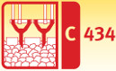
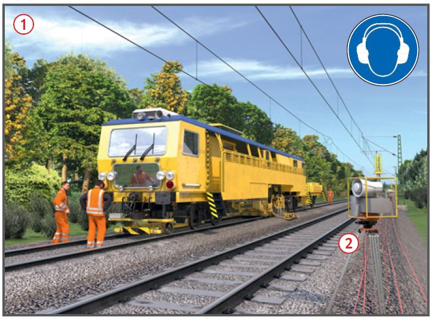
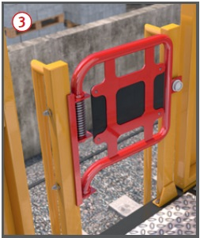
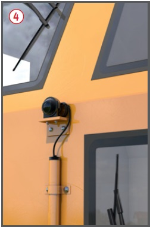
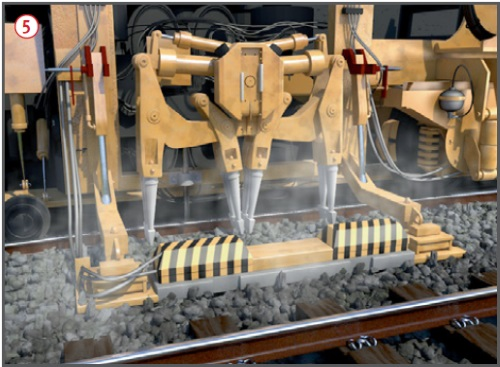

Arbeiten mit Stopfmaschinen
|

|

Gefährdungen
- Durch Zugfahrten im Nachbargleis,
Arbeitsbewegungen im Arbeitsgleis
und durch die Arbeitseinrichtungen
der Maschine
können Personen verletzt oder
getötet werden.

Allgemeines
- Mit Stopfmaschinen wird der
Schotter unter den Schwellen
verdichtet und damit das Gleis
stabilisiert und ausgerichtet.
Dabei besteht Gefahr durch
Zugfahrten im benachbarten
Gleis
 (Betriebsgleis).
(Betriebsgleis).
- Zwischen Stopfmaschine und
benachbartem Gleis gibt es bei 4 m Gleisabstand keinen Sicherheitsraum.
Schutzmaßnahmen
Zugfahrten im benachbarten Gleis
- Arbeiten erst dann beginnen,
wenn die in der Sicherungsanweisung (Sicherungsplan)
festgelegten Maßnahmen umgesetzt
und wirksam sind.
- Bei notwendigem Aufenthalt
im Gefahrenbereich des Nachbargleises
(z.B zur Störungsbeseitigung) Sperrung des Nachbargleises
veranlassen.
- Messarbeiten werden nur im
gesperrten Gleis durchgeführt;
bei vorhandenem Nachbargleis
erfolgt die Sicherung mindestens
durch ein automatisches
Warnsystem mit Handschalter.
Hinweis: Bei der DB Netz AG
sind Absperrposten hier nicht
zugelassen.
- Bei Weichenstopfarbeiten in
der Verbindung bzw. im abzweigenden
Strang das benachbarte
Gleis sperren lassen.
- Verlassen der Maschine, z. B.
für Messarbeiten, nur in Abstimmung mit dem Aufsichtführenden.
- Aufenthalt im Arbeitsgleis
außerhalb der Maschine und
Betreten des Nachbargleises nur
mit Sicherung, z. B. Sperrung des
Nachbargleises oder Warnung
durch automatisches Warnsystem
 .
.
- Maschine nur zur gleisfreien
Seite (Feldseite) verlassen.
- Maschine nur von der Feldseite her besteigen.
- Ausgänge mit selbstschließenden
Verriegelungen zum benachbarten
Betriebsgleis ausrüsten
 . Ketten oder einfache Riegel
sind keine selbstschließenden
Verriegelungen.
. Ketten oder einfache Riegel
sind keine selbstschließenden
Verriegelungen.
- Vorhandene feste Absperrungen
nicht übersteigen.
- Bei Warnung mit automatischem
Warnsystem oder Sicherungsposten
müssen die Signale
hörbar sein, wenn die Stopfmaschine arbeitet.

- Vor Arbeitsbeginn die Maschine
vom Sicherungsunternehmen
mit mobilen funkangesteuerten
Warnsignalgebern ausrüsten
lassen, wenn dies in der Sicherungsanweisung
(Sicherungsplan)
vorgesehen ist.
- Bei Warnung mit automatischem
Warnsystem darf das
benachbarte Gleis nicht betreten
werden, solange die optische
Erinnerungsanzeige ansteht.
- Warnsignale müssen für Personal
außen an der Maschine auch
bei Benutzung von Sprech(funk)einrichtungen hörbar sein.
- Gehörschutz muss für das
Signalhören im Gleisoberbau zugelassen sein (S-Kennzeichnung).
- Bei Auf- und Abrüstarbeiten
müssen Sicherungsmaßnahmen
für das Nachbargleis, z. B. Gleissperrung,
durchgeführt sein.
- Vor Verlassen der Einsatzstelle
die Transportsicherungen für die
beweglichen Arbeitseinrichtungen
der Maschine einlegen.
Fahrbewegung im Arbeitsgleis
- Im Arbeitsgleis können sich:
- Personen aufhalten, z. B. Messtrupp,
- andere Maschinen befinden, z. B. Schotterplaniermaschinen.
- Stopfmaschine mit Kamera-Monitorsystem für beide
Richtungen ausrüsten. Monitore
in beiden Stirnkabinen und in
der Stopfkabine
 .
.
- Fahrbewegung nur einleiten,
wenn der Fahrweg direkt vom
Stirnführerstand aus oder über
Kamera-Monitorsystem einsehbar
und frei ist. Die Beobachtung
des Fahrweges im Rahmen einer
Rangier- oder Zugfahrt darf nicht
über das Kamera-Monitor-System erfolgen.
- Gefahrenbereich vor und
hinter der Stopfmaschine freihalten.
- Gefahrenbereiche anderer
Maschinen im Arbeitsgleis freihalten, z. B. Schotterplaniermaschinen.
- Bei Nachtbaustellen ausreichende
Beleuchtung außerhalb
der Stopfmaschine für alle
Arbeits-/Verkehrsbereiche einrichten.
Zusätzliche Hinweise für Stopfaggregate
- Gefahrenbereich der Stopfaggregate nicht betreten
 .
.
- Wenn Aufenthalt im Gefahrenbereich
der Stopfaggregate
erforderlich ist (z. B. zur Störungsbeseitigung)
sind die Stopfaggregate vorher gegen unbeabsichtigtes
Anlaufen zu sichern
(Bedienungsanleitung beachten).

Zusätzliche Hinweise bei Gleisen mit Fahrleitungsanlagen
- Maschine nur an den Stellen
besteigen, die als erhöhte
Standorte vorgesehen sind
(Aufstiege, Umlauf, Kabine).
- Vorhandene Fahrleitungsanlage immer
als spannungsführend ansehen,
wenn Spannungsfreiheit nicht
zweifelsfrei feststeht und
geerdet ist. Dies gilt auch auf
Abstellgleisen außerhalb der
Baustelle.
- Reinigungsarbeiten an hochliegenden
Teilen, z. B. Kabinenfenster,
nur durchführen, wenn
der Schutzabstand zur Fahrleitungsanlage sicher eingehalten
werden kann (bei 15 kV: 1,5 m
für bahntechnisch unterwiesene
Personen).
07/2021